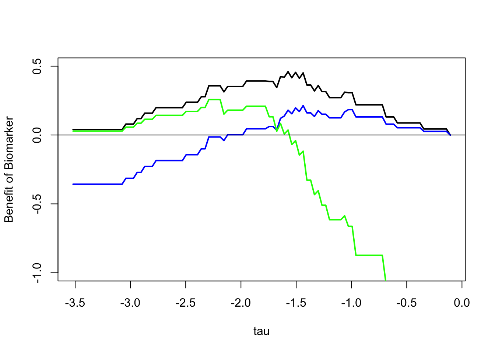

benefit = function(X=XX,
Y=YY,
pp,
u00 = 3,
u11 = 20,
u10 = 2,
u01 = 15
){
uD2yes = pp*u11 + (1-pp)*u10
uD2no = pp*u01 + (1-pp)*u00
uNoMarker = max(uD2yes,uD2no)
tau = seq(min(X),max(X),by= ( max(X)-min(X) )/100 )
F0 = F1 = rep(NA,length(tau))
for (jj in 1:length(tau)){
F1[jj] = mean(X[Y==1] <= tau[jj])
F0[jj] = mean(X[Y==0] <= tau[jj])
}
uMarker = pp * (1-F1) * u11 + (1-pp) * (1-F0)* u10 + pp * F1 * u01 + (1-pp) * F0 * u00
benefitMarker = uMarker - uNoMarker
return(list(tau=tau,benefitMarker=benefitMarker,
uD2yes=uD2yes,uD2no=uD2no))
}Lecture 5: Decision Analysis
Decision Analysis
Decision Tree
We will now introduce biomarker analysis through a decision-theoretic framework. “Modeling in Medical Decision Making” goes over these concepts in detail. I posted a copy on the canvas files. A seminal paper on this topic in the medical area is (Pauker and Kassirer 1980).
We try to model the clinical application of biomarker expressions levels to medical decision making. Our model can be use to quantify the value using the marker for specific individuals and groups, and ca also be used to determine the optimal threshold for a continuous marker in a formal way. We begin with a fixed threshold.
To motivate our discussion, we introduce an example where a clinician must make an informed decision regarding whether to conduct a surgery for an ovarian cancer patient when it is not known ahead of time whether the surgery can be performed “optimally” as defined earlier. Should the clinician conduct a surgery where the tumor is operable optimally, then a large utility should be subsequently accrued by the patient. However, a low utility may be experienced by the patient when a surgery is performed while the tumor was only amanable to a suboptimal outcome. We present the following decision tree that captures such a scenario.
In the decision tree, the clinician encounters two decisions: 1) whether to measure the biomarker and 2) whether to perform surgery, possibly using the biomarker to make a more informed decision. To simplify a bit, we assume that it is know that higher levels of the biomarkers are associated with a better chance that the tumor may be operable optimally. If biomarker analysis is to be done, then a surgery will be conducted on the basis of whether the biomarker expression level for the patient is above a pre-defined threshold. We will later study the results of varying the threshold. This yields a total of \(2^3 = 8\) possible outcomes. We let \(q\) denote the joint probability that the biomarker exceed the threshold. Let the condiational probabilities that the surgery is suboptimal given the biomarker is above (below) the threshold be \(p_{+}\) (\(p_{-}\)). Then the marginal probability that the surgery is suboptimal, \(p = q p_+ + (1-q) p_-\). This is relevant in the case in which no biomarker is observed. In the notation for utiilties the first index is 1 if surgery and 0 if not; the second index is 1 if the outcome is optimal and 0 if not.
Optimal Decision w/out the Biomarker
We first focus on the bottom part of the tree which corresponds to proceeding to surgery without a biomarker. This admits four total outcomes based on the surgery decision and operability of the tumor. There are probabilities and utilities associated with each. The probabilities of a suboptimal outcome are marginalized with respect to the biomarker status because the biomarker data is not collected and thus unknown. These probabilities and utilities can be used to derive expected utilities, as follows:
To maximize the expected utility at the binary node representing sugery, we will choose a surgery if:
\[ p u_{11} + (1-p) u_{10} > p u_{01} + (1-p) u_{00} \]
which is equivalent to
\[ p ( u_{11}-u_{01} ) > (1-p) ( u_{00}-u_{10} ) \]
Here, \(u_{00}-u_{10}\) compares the health outcome of a suboptimally operable patient without \(u_{00}\) and with \(u_{10}\) surgery. We expect the overall survival to be short and similar in both cases, although the quality of life will be worse if surgery is performed, so this difference will be positive and not very large.
Next, \(u_{11}-u_{01}\) compares the health outcome of an optimally operable patient without \(u_{01}\) and with \(u_{11}\) surgery. We expect the overall survival to be far better under the surgery option, as the tumor is removed successfully, although the quality of life will be worse. Overall this difference will be positive and possibly large.
Having established the sign of these utility differences, we can rewrite the inequality as \[ \frac {p} {1-p} > \frac {u_{00}-u_{10} } { u_{11}-u_{01} } \] emphasizing that the decision to perform surgery in the absence of the biomarker information depends on the probabilities only through the odds, and on the utilities only through the ratio of differences between the utilities associated with the same debulking state.
As the likelihood of a successful surgery is generally moderately high, say 30 to 70 percent depending on the population, and the ratio on the right is small, the standard practice in the absence of a biomarker is to perform surgery.
Optimal Decision with the Biomarker
Can a biomarker change this picture? Let’s consider the two surgery decision nodes at the top of the figure, those that are made after making the observation of whether the biomarker exceeds the threshold. Recall we are assuming the biomarker is positively and monotonically associated with the ability to perform an optimal surgery. So we expect \(p_+ > p\) and without additional work we can conclude that the optimal option is surgery there too.
So the biomarker will be of clinical use is if it can reverse the decision for women whose biomarker level is below the threshold. Using the same logic as earlier, this requires \[ \frac {p_-} {1-p_-} > \frac {u_{00}-u_{10} } { u_{11}-u_{01} } \] Let’s assume this hold at the chosen threshold. If there is no threshold for which this is the case, then we can rule the biomarker out.
Now we that know the optimal decisions under each of the outcome of the biomarker “chance node” we can move back the the first decision: whether the biomarker should be collected. Without any cost or other consequences for the observation itself, the data should be collected, because the biomarker-based decisions will leave the positive women equally well off and the negative women better off. It is important to quantify how much better off on average women will be. This is a quantifiction of the worthyness of the biomarker in the context of this decision. If can be use to a) compare this worthiness to the cost or potential negative consequences of making the observation and b) compare biomarkers.
Optimal Two-stage Decision Strategy
The expected utility of observing the biomarker and then proceeding optimally after the reslt is observed is \[ q ( p_+ u_{11} + (1-p_+) u_{10}) + (1-q) ( p_- u_{01} + (1-p_-) u_{00}) \]
It can be useful to rewrite this expression in terms of the sensitivity and specificity of the biomarker. Some definitions: the threshold is \(\tau\), a positive test is \(X > \tau\), the positive label is “optimal”, the conditional cdfs of \(X\) given the label are \(F_0\) and \(F_1\). The sensitivity is \[p( X > \tau | \mbox{Optimal} ) = 1-F_1(\tau)\] and the specificity is \[p( X \leq \tau | \mbox{Suboptimal} ) = F_0(\tau)\]
These relate to the \(p\)’s and \(q\)’s via \[ qp_+ = p (1-F_1(\tau)) \quad \quad q(1-p_+) = (1-p)(1-F_0(\tau)) \quad \quad (1-q)p_- = p F_1(\tau) \quad \quad (1-q)(1-p_-) = (1-p) F_0(\tau) \] so we can rewrite the expected utility as
\[ p \left[ (1-F_1(\tau)) u_{11} + F_1(\tau) u_{01} \right] + (1-p) \left[ (1-F_0(\tau)) u_{10} + F_0(\tau)u_{00} \right] \]
Putting all these pieces together now we have that the benefit of using the biomarker compared to making a decision without using the biomarker is:
\[\begin{align*} p \left[ (1-F_1(\tau)) u_{11} + F_1(\tau) u_{10} \right] + (1-p) \left[ (1-F_0(\tau)) u_{01} + F_0(\tau)u_{00} \right] \\ - \max \left( p u_{11} + (1-p) u_{10}, p u_{01} + (1-p) u_{00} \right) \end{align*}\]This quantity can be used to assess the expected utility as a function of the threshold, assuming one proceeds optimally.
This logic is an example of “Value of Information” analysis (VoI), a very general principle for quantifying the value of collecting a particular piece of data, in the context of solving a specific decision task. @Jackson2022arsa review this extensively and provide many useful references.
@vickers2008as has an interesting perspective on how to bypass the specification of the ratio \(( u_{00}-u_{10} )/( u_{11}-u_{01} )\), which results in an approach called decision curve analysis.
Illustration
To illustrate a decision analysis and show how it can be used to investigate alternative thresholds, we have created the following example. The biomarker is our friendly zinc finger protein from earlier. The label is debulking status.
library(curatedOvarianData)data(GSE32063_eset)
GeneName = "ZNF487"
XX = exprs(GSE32063_eset)[GeneName,]
YY = pData(GSE32063_eset)[,"debulking"] == "optimal"
plot(benefit(pp=1/6)$tau,benefit(pp=1/6)$benefitMarker,
type="l",lwd=2,ylim=c(-1,.5),
ylab="Benefit of Biomarker",xlab="tau")
lines(benefit(pp=.1)$tau,benefit(pp=.1)$benefitMarker,
type="l",lwd=2,col="blue")
lines(benefit(pp=.3)$tau,benefit(pp=.4)$benefitMarker,
type="l",lwd=2,col="green")
abline(0,0)
Negative Benefit?
Why are these curves not monotone?
Why is it that a biomarker can provide an average positive benefit for some threshold and a negative benefit for others?
Is it good or bad that these curves are flat at the top over a fairly broad range?
Tinker with the utility values to get a better sense for how the trade-offs play out.
We can also analyze the various cost-benefit tradeoffs below:
c(.1,benefit(pp=.1)$uD2yes,benefit(pp=.1)$uD2no)[1] 0.1 3.8 4.2c(.2,benefit(pp=.2)$uD2yes,benefit(pp=.2)$uD2no)[1] 0.2 5.6 5.4c(.4,benefit(pp=.4)$uD2yes,benefit(pp=.4)$uD2no)[1] 0.4 9.2 7.8References
Pauker, Stephen G, and Jerome P Kassirer. 1980. “The Threshold Approach to Clinical Decision Making.” New England Journal of Medicine 302 (20): 1109–17.